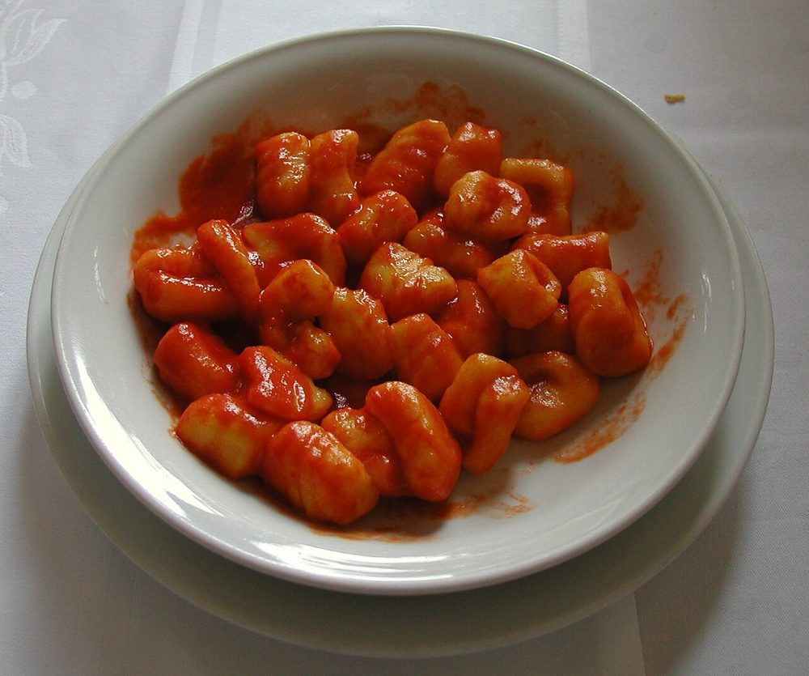

Fairmount Bagel
74 Av. Fairmount O.

Fairmount Bagel est la célèbre boulangerie de bagels du Mile End, ouverte depuis 1919. Les bagels sont roulés à la main et cuits au four à bois. Elle est ouverte 24 heures sur 24 !
Voir sur la carteDépart : station de métro Laurier (ligne orange)
74 Av. Fairmount O.
Fairmount Bagel est la célèbre boulangerie de bagels du Mile End, ouverte depuis 1919. Les bagels sont roulés à la main et cuits au four à bois. Elle est ouverte 24 heures sur 24 !
Voir sur la carte68 Av. Fairmount O.

Drogheria Fine est une petite épicerie italienne du quartier. Elle est connue pour ses gnocchis à 5 $, servis dans une boîte avec la sauce tomate de la nonna. Il y a souvent une file d'attente !
Voir sur la carte124 Rue Saint-Viateur O.

Café Olimpico est le café célèbre du Mile End depuis 1970, fondé par Rocco Furfaro. On y boit un vrai espresso italien. C'est un lieu de rencontre pour tout le quartier.
Voir sur la carte5580 Rue Saint-Urbain

 AvantAujourd'hui
AvantAujourd'huiFaites glisser pour comparer les époques, ou utilisez les flèches du clavier.
Cette église a été conçue par l'architecte Aristide Beaugrand-Champagne en 1915. Elle a un dôme unique de style byzantin, inspiré de Sainte-Sophie à Istanbul. Son dôme était le plus grand de Montréal avant l'Oratoire Saint-Joseph.
Voir sur la carte5723 Av. du Parc

 AvantAujourd'hui
AvantAujourd'huiFaites glisser pour comparer les époques, ou utilisez les flèches du clavier.
Le Théâtre Rialto est un ancien cinéma construit en 1924. C'est une salle historique, très belle, qui accueille aujourd'hui des spectacles et des événements.
Voir sur la carte